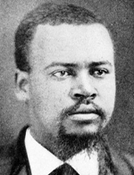

|

|

|
|
|
North Carolina's first black congressman, John Adams Hyman was born a slave in
Warren County and was taught to read and write by a Northern-born
storekeeper. In 1861, he was sold in Alabama ("bought and sold as a
brute," as he later wrote to Charles Sumner). Hyman returned to Warren
County in 1865, received an elementary education, and became a trustee
of the first public school in his area. He farmed and then opened a
country store. According to the census of 1870, Hyman owned $1,500 in
real estate and $2,000 in personal property. His store failed in 1872.
Hyman attended the state black convention of 1866 and the Republican
state convention of 1867. He served as a voter registrar in 1867 and was
elected to the constitutional convention of 1868. After unsuccessfully
seeking the Republican nomination for Congress in North Carolina's
"Black Second" Congressional District in 1868, Hyman was elected to the
state Senate, serving 1868-74. In 1872, he wrote to Senator Sumner in
support of his Civil Rights Bill: "The loyal colored citizens of North
Carolina to a man sustain you in your course. There can be no grades of
citizenship under the American flag." In 1874, Hyman was elected to the
U.S. House of Representatives and served in the 44th Congress, 1875-77.
He failed to win reelection in 1876, returned to farming, and operated a
liquor store. Because he sold liquor and was accused of embezzling
church funds, Hyman was expelled from the Warrenton Colored Methodist
Church. Hyman served briefly as special deputy internal revenue
collector under President Hayes but was removed because of pressure from
his opponents in North Carolina Republican politics. He unsuccessfully
sought the nomination for his congressional seat in 1878 and may have
worked for the Democrats in that election. Hyman helped to organize an
arrangement in Warren County whereby blacks voted for Democrats for
county offices in exchange for Democrats allowing a few blacks to hold
minor local posts. Between 1879 and 1889, constantly in debt, Hyman
worked in Maryland as an assistant mail clerk, and then moved to
Washington, D.C., where he was employed in the seed dispensary of the
Department of Agriculture. He died in Washington.
Source: Eric Foner, Freedom's Lawmakers: A Directory of Black
Officeholders during Reconstruction (New York: Oxford University Press,
1993), 113.
|